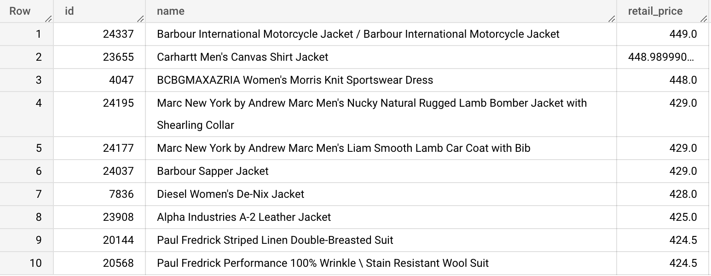
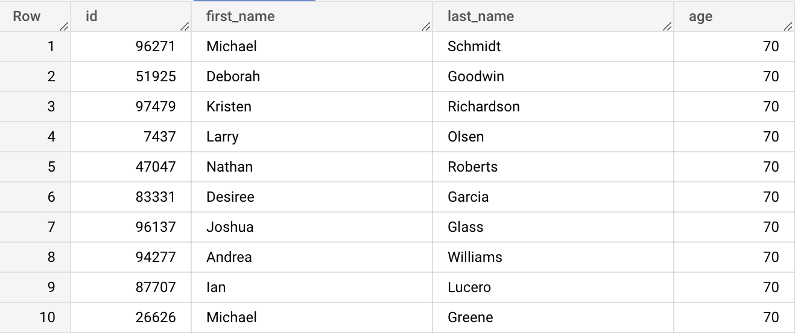

The OFFSET clause helps us paginate the returned results. It allows us to "skip" a given number of rows. It has to be used together with the LIMIT clause. For example, the following code will return the 91th to 100th most expensive products.
Type the query below in the BigQuery console and run it. Don't copy paste. 😉
SELECT id, name, retail_price
FROM bigquery-public-data.thelook_ecommerce.products
ORDER BY retail_price DESC
LIMIT 10
OFFSET 90;
Example results:

{% include practice_problems_intructions.html %}bigquery-public-data.thelook_ecommerce.users

SELECT id, first_name, last_name, age
FROM bigquery-public-data.thelook_ecommerce.users
ORDER BY age DESC
LIMIT 10
OFFSET 40;